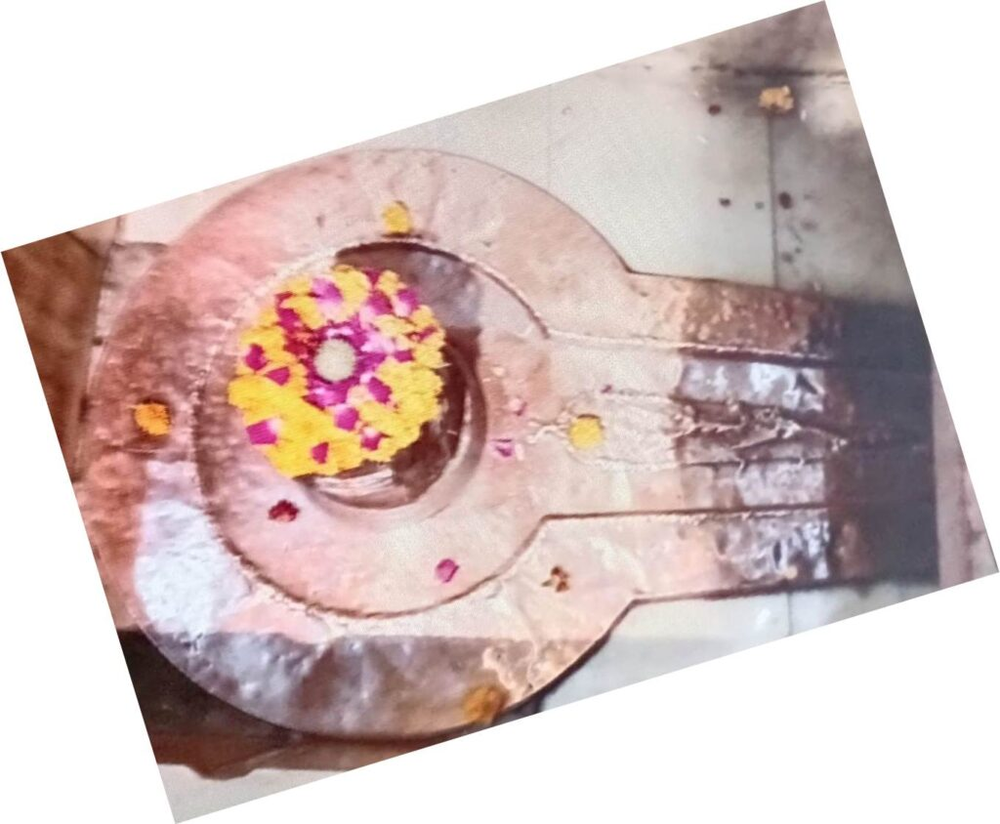

<?xml version="1.0" encoding="UTF-8"?><rss version="2.0"
	xmlns:content="http://purl.org/rss/1.0/modules/content/"
	xmlns:wfw="http://wellformedweb.org/CommentAPI/"
	xmlns:dc="http://purl.org/dc/elements/1.1/"
	xmlns:atom="http://www.w3.org/2005/Atom"
	xmlns:sy="http://purl.org/rss/1.0/modules/syndication/"
	xmlns:slash="http://purl.org/rss/1.0/modules/slash/"
	>

<channel>
	<title>Shaileshwar &#8211; Varanasi Temples</title>
	<atom:link href="index.html" rel="self" type="application/rss+xml" />
	<link>../../../../../index.html</link>
	<description>Temples of Varanasi as referred to in Kashi Khand</description>
	<lastBuildDate>Thu, 19 Jun 2025 05:16:46 +0000</lastBuildDate>
	<language>en-US</language>
	<sy:updatePeriod>hourly</sy:updatePeriod>
	<sy:updateFrequency>1</sy:updateFrequency>
	<generator>https://wordpress.org/?v=4.6.29</generator>
	<item>
		<title>SHAILESHWAR</title>
		<link>../../../../../shiva-temples/shaileshwar/index.html</link>
		<pubDate>Tue, 11 May 2010 07:35:01 +0000</pubDate>
		<dc:creator><![CDATA[admin]]></dc:creator>
				<category><![CDATA[Other Shiva Temples (S-Y)]]></category>
		<category><![CDATA[Shaileshwar]]></category>
		<category><![CDATA[Shiva Temples]]></category>
		<category><![CDATA[shaileshwar]]></category>

		<guid isPermaLink="false">../../../../../p=510.html</guid>
		<description><![CDATA[Giri Raj, Himavan, reached Kashi to meet his daughter Goddess Parvaty and carried with him a lot of Gifts. (For details kindly refer to Ratneshwar). When Giri Raj heard about the greatness of Lord Visweshwara, his generosity and the attractive beauty of his palace, he (Giri Raj) felt ashamed and he felt that the huge [&#8230;]]]></description>
				<content:encoded><![CDATA[<p>Giri Raj, Himavan, reached Kashi to meet his daughter Goddess Parvaty and carried with him a lot of Gifts. (For details kindly refer to Ratneshwar). When Giri Raj heard about the greatness of Lord Visweshwara, his generosity and the attractive beauty of his palace, he (Giri Raj) felt ashamed and he felt that the huge quantities of Ratnas (precious stones) brought by him as gift for his daughter was no match to what was possessed by Lord Visweshar.  By the time it was evening. Giri Raj got busy during the night.</p>
<p>He also decided to build a temple in dedication to Lord Shiva.  He summoned all his physically powerful and knowledgeable workers and sculptors from the mountain and instructed them to construct a temple, with a strong belief that by getting a temple constructed for Lord Shiva, he will be respected not only in this world but in various other worlds (Lok).</p>
<p>Kashi Khand, Chapter 66 also states that a person who constructs a Shiva Temple in Kashi gets the fruits of constructing houses for all the three worlds. He will get the benefits accruing out of performing very big Yagyas. Listening to all his advices, the workers of Giri Raj set upon the task and worked throughout the night.  By early morning they finished the construction of a temple near the river Varuna.</p>
<p>Soon Giri Raj installed a Shiv Ling called Shaileshwar in the temple. After taking bath in Pancha Nada Teerth and worshipping Kaal Bhairav, Giri Raj left all the ratnas (precious stones) at a particular place in a heap and left for his abode in the mountains.</p>
<p>This temple was spotted by two Shiv Gans who immediately reported the matter to Lord Shiva.  They were surprised that just one day before there was no temple and some how the place of worship has sprung up overnight. Lord Shiva, Goddess Parvaty and the Shiv Gans soon reached the place where they saw the beautiful temple and the Shiv Ling which was radiating light.  Both Lord Shiva and Goddess Parvaty were extremely happy at seeing this and Lord Shiva saw the inscriptions in the temple and immediately realized that the noble work has been done by Giri Raj.</p>
<p></p>
<p style="text-align: center;"><strong>(SHAILESHWAR)</strong></p>
<p>Goddess Parvaty was also extremely pleased. She requested Lord Shiva that he should be present in that Ling, to which Lord Shiva agreed.  Lord Shiva further stated that those who take bath in Varuna River and worship Shaileshwar will attain Moksha.  The devotees who worship Shaileshwar will never be unhappy in their lives.  Goddess Parvaty also blessed that the devotees who worship Shaileshwar will be like the children of the Goddess.</p>
<p>&nbsp;</p>
<p><strong><span style="text-decoration: underline;">LOCATION OF SHAILESHWAR</span></strong></p>
<p>Shaileshwar is located at A-40/11, Marhia Ghat, Shailputri. If one travels from Varanasi Railway station through G.T. Road, just before Varanasi City Station, a small road takes a left turn where he will encounter a level crossing. After crossing the road, he will travel for about 2 Kms. to reach this place. People can travel upto this place by rickshaw/auto rickshaw and most of the drivers know the place Shailputri.</p>
<p>&nbsp;</p>
<p><strong>Please watch our YouTube Video about Shaileshwar at following Link</strong></p>
<p>&nbsp;</p>
<p><a href="https://www.youtube.com/watch?v=J4j53uVdNwo">https://www.youtube.com/watch?v=J4j53uVdNwo</a></p>
<p>&nbsp;</p>
<p>&nbsp;</p>
<p><strong><span style="text-decoration: underline;">TYPES OF POOJA</span></strong></p>
<p>The temple is open from 5.00 a.m. to 12.00 noon  and from 03.00 p.m. to 10.00 p.m. Aarties are performed in the morning and in the evening.  The timings may vary a little.</p>
<p>&nbsp;</p>
]]></content:encoded>
			</item>
	</channel>
</rss>
